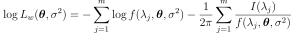
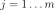
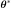
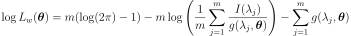
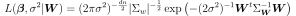

ARMA process estimation¶
![Ind_q = [q_1, q_2]](../../_images/math/9d89ab09d7acb52e52002f4930701818f19f2586.svg) , the methods aims to find the best model
, the methods aims to find the best model
 that fits the data and estimate the
corresponding coefficients. The best model is considered with
respect to the
that fits the data and estimate the
corresponding coefficients. The best model is considered with
respect to the  criteria (corrected Akaike Information
Criterion), defined by:
criteria (corrected Akaike Information
Criterion), defined by:where
is half the number of points of the time grid of the process sample (if the data are a process sample) or in a block of the time series (if the data are a time series).
Two other criteria are computed for each order :
the AIC criterion:
and the BIC criterion:
criterion improves the previous one by penalizing a
too high order that would artificially fit to the data. process writes:(1)¶
where and
 is the frequency value.
is the frequency value.
The Whittle log-likelihood writes:
(2)¶
where:
 is the non parametric estimate of the spectral density,
expressed in the Fourier space (frequencies in
instead of ). By default the Welch estimator is used.
is the non parametric estimate of the spectral density,
expressed in the Fourier space (frequencies in
instead of ). By default the Welch estimator is used.is the Fourier frequency, ,  with
the largest integer .
We estimate the scalar coefficients by maximizing the log-likelihood function. The corresponding equations lead to the following relation:
(3)¶
where  maximizes:
(4)¶
The Whitle estimation requires that:
the determinant of the eigenvalues of the companion matrix associated to the polynomial are outside the unit disc,, which guarantees the stationarity of the process;
the determinant of the eigenvalues of the companion matrix associated to the polynomial are outside the unit disc, which guarantees the invertibility of the process.
Multivariate estimation
 be a multivariate
time series of dimension
be a multivariate
time series of dimension  generated by an ARMA process
where are supposed to
be known. We assume that the white noise
generated by an ARMA process
where are supposed to
be known. We assume that the white noise  is
distributed according to the normal distribution with zero mean and
with covariance matrix
is
distributed according to the normal distribution with zero mean and
with covariance matrix
 where
.
where
. ,
then is normal with zero mean. Its covariance matrix
writes
which depends on the coefficients
,
then is normal with zero mean. Its covariance matrix
writes
which depends on the coefficients  for
for
 and and on the matrix
and and on the matrix
 .
.The likelihood of writes:
(5)¶
where
 ,
and where denotes the determinant.
,
and where denotes the determinant.
The difficulty arises from the great size () of which is a dense matrix in the general case. [mauricio1995] proposes an efficient algorithm to evaluate the likelihood function. The main point is to use a change of variable that leads to a block-diagonal sparse covariance matrix.
The multivariate Whittle estimation requires that:
the determinant of the eigenvalues of the companion matrix associated to the polynomial are outside the unit disc, which guarantees the stationarity of the process;
the determinant of the eigenvalues of the companion matrix associated to the polynomial
 are
outside the unit disc, which guarantees the invertibility of the
process.
are
outside the unit disc, which guarantees the invertibility of the
process.
API:
See
WhittleFactorySee
WelchFactorySee
ARMA
Examples: